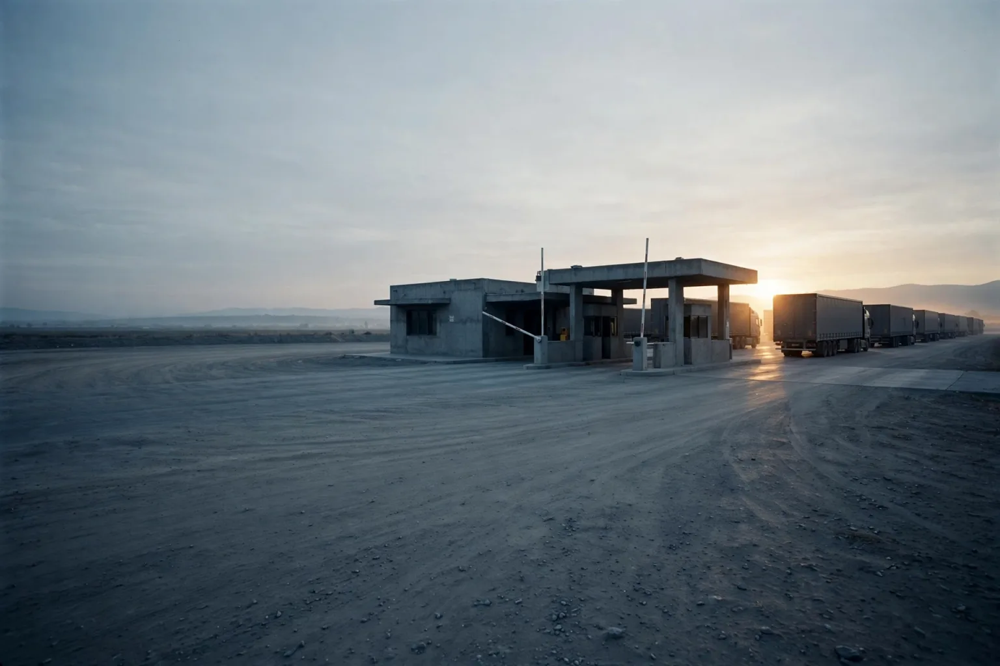
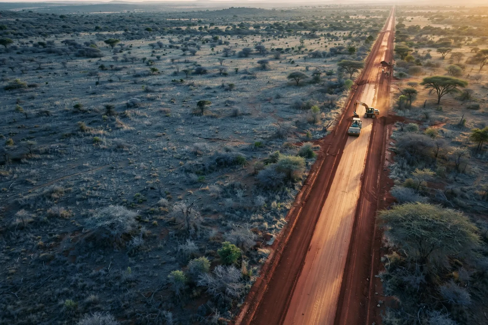
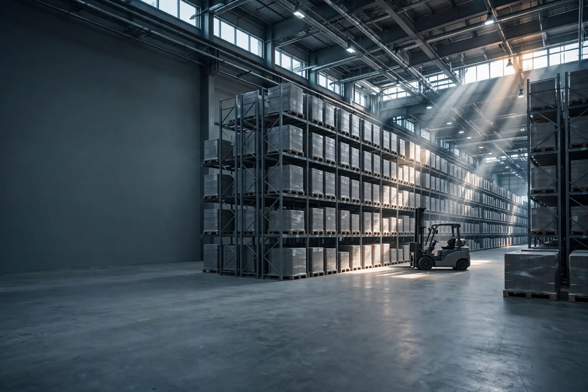

Bahrain-based · Africa-focused · Globally connected
Connecting Africa
with global markets
AZAN Global Logistics structures, coordinates and develops international logistics and mobility operations — from land freight corridors in West Africa to executive aviation across continents.
Ports and terminals
Land freight corridors
Logistics platforms
Global connections
Two business lines
Land logistics and
executive aviation
Two complementary ways of moving what matters: freight across borders, and the people who decide, between continents.

01Land Logistics
Structuring and coordinating cross-border road freight between ports, logistics centres and inland markets — with execution carried out by the operating structure in each country.
Discover 02Executive Aviation
Commercial and coordination solutions for private and executive flights, arranged through licensed and specialised air operators, for regional and intercontinental travel.
DiscoverThe company
An international
structure, built to
move across borders.
AZAN Global Logistics W.L.L. is established in the Kingdom of Bahrain, which acts as its corporate hub for contracting, coordination, commercial relations and the management of its projects.
Physical operations are carried out through the corresponding operating structures, subsidiaries or authorised partners in each country. AZAN structures the operation; specialised operators execute it.
That separation is deliberate. It lets the company work across several jurisdictions at once while keeping one point of responsibility for the client.

Flagship project
West Africa
Logistics Corridor
A cross-border road freight corridor under development, conceived to connect ports, logistics centres and inland markets across several West African countries.
Global network
Bahrain to Africa,
Europe and beyond
How we work
One operation.
One point of responsibility.
Between a shipper and a delivered load there are ports, borders, carriers, authorities and paperwork in several countries. AZAN holds that together.
We define how the operation will work: the parties involved, the contractual framework, the responsibilities of each one and the route the goods or the passengers will take.
We bring together carriers, port agents, customs brokers, authorities and local partners in each country, and keep them working to the same plan.

The physical work — trucks, drivers, maintenance, permits, aircraft — is carried out by the operating structure or by licensed operators in the country concerned.
The client deals with one counterparty and receives one consolidated view of the operation, wherever in the world it is taking place.
Work with us
Moving freight, or
moving decision makers
If you are a shipper, an operator, a financier or an institution with an operation to move across borders, we would like to hear about it.